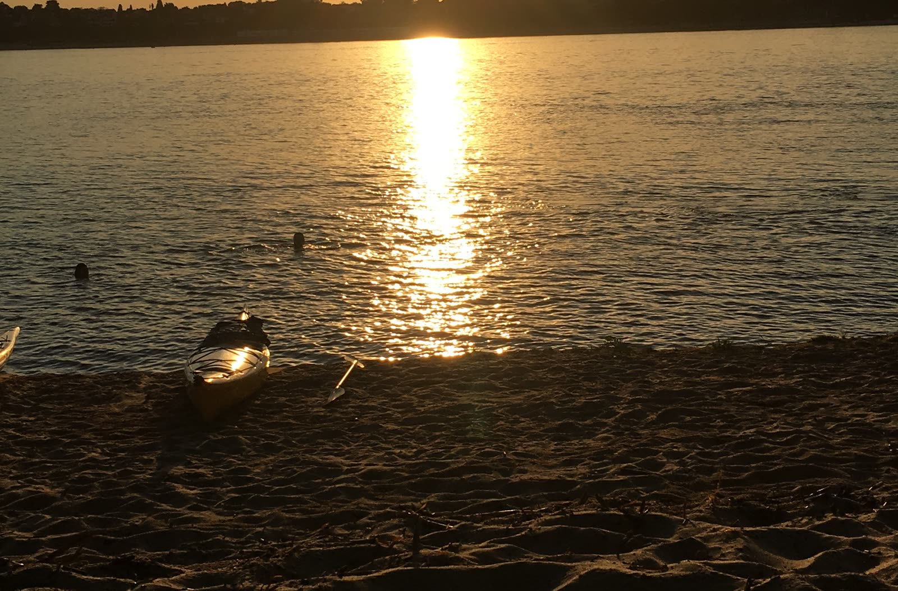
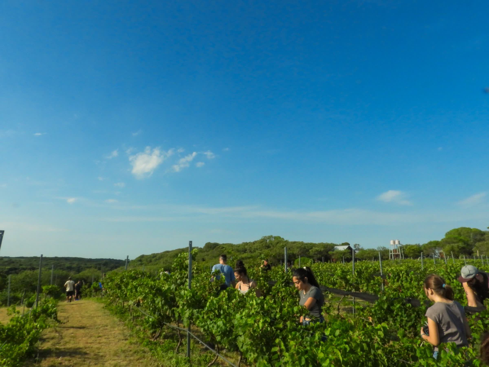
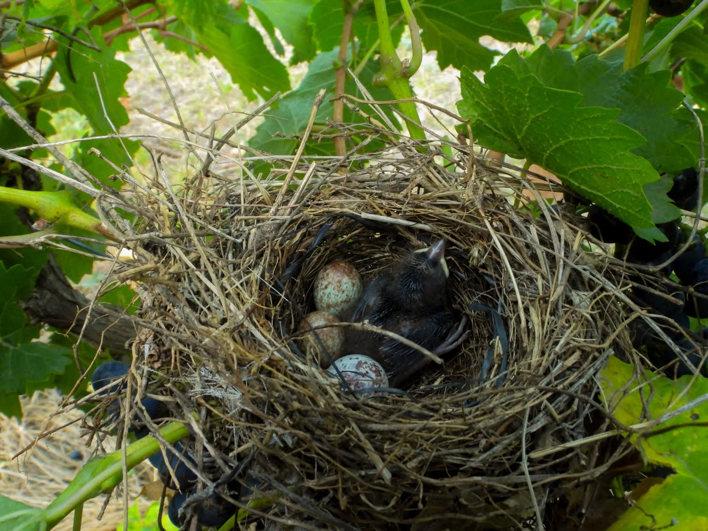
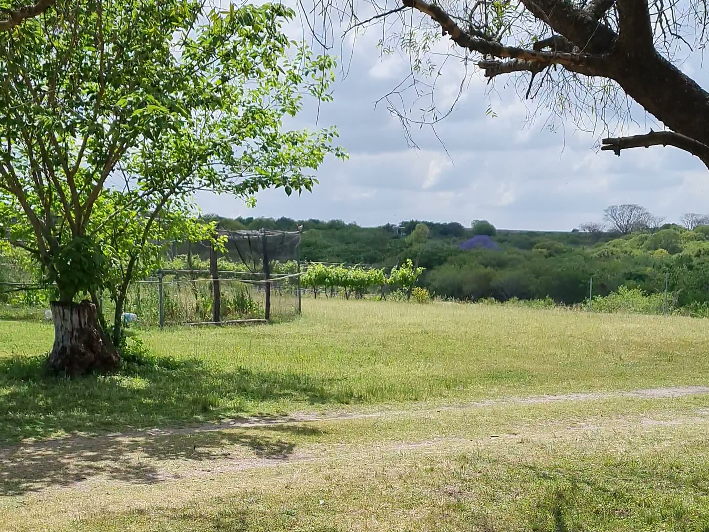

Kayak por el delta
Recorrido entre lagunas y riachos por el Predelta del Paraná, saliendo desde la costa.

Siempre hay algo para hacer en Finca Las Cuevas.

Recorrido entre lagunas y riachos por el Predelta del Paraná, saliendo desde la costa.

Las Cuevas está catalogado como uno de los mejores pesqueros del Paraná medio. Dorados, surubíes, mandubíes, bogas, pejerreyes y más. Desde la costa o embarcado, según la época.

Más de 350 especies habitan la zona. Coordinamos la salida con guías especializados. Ideal también para safari fotográfico: la fauna, los paisajes y la luz de Entre Ríos son perfectos para capturar momentos únicos.

Recorré los alrededores de la finca a caballo. La zona está rodeada de campo, caballos y vacas. Un paisaje que te transporta a otra época.
Las Cuevas es reconocida como portal de entrada al Sitio Ramsar Delta del Paraná: 243.000 hectáreas de humedal de importancia internacional. Un mosaico de islas, ríos y biodiversidad entre Entre Ríos y Santa Fe, que incluye los parques nacionales Pre-Delta e Islas de Santa Fe.
Todas las actividades son aranceladas y con reserva previa
Contanos qué te interesa y te armamos la experiencia perfecta.
Consultanos